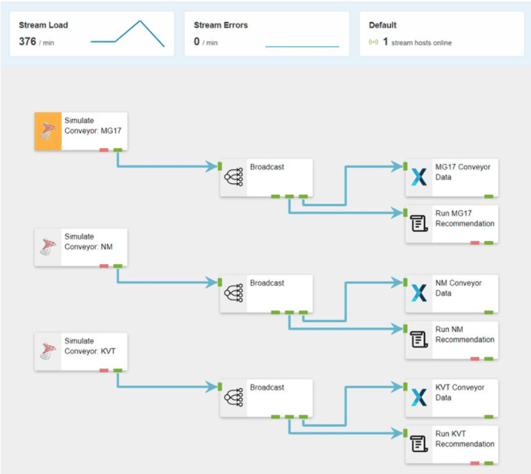

Configuration FAQs
Find answers to some of the most frequently asked configuration questions.
App Designer
What should I do when my SQL stored procedure exceeds the 30-second timeout?
It is not possible to change the 30-second timeout limit. First optimize your stored procedure with the help of a tool like Claude. If it still times out, use this asynchronous approach with Data Streams to ensure users don't wait:
- Create a Queue Table
CREATE TABLE StoredProcQueue (
ID BIGINT IDENTITY(1,1) PRIMARY KEY,
Parameters NVARCHAR(MAX),
Status TINYINT NOT NULL DEFAULT 0, -- 0=Pending, 1=Processing, 2=Completed, 3=Failed
CreatedDate DATETIME2 DEFAULT GETDATE(),
CompletedDate DATETIME2 NULL
);
-- Critical indexes for performance
CREATE INDEX IX_StoredProcQueue_Status_Created
ON StoredProcQueue (Status, CreatedDate)
WHERE Status IN (0,1); -- Only index active records
CREATE INDEX IX_StoredProcQueue_Cleanup
ON StoredProcQueue (Status, CompletedDate)
WHERE Status IN (2,3); -- For cleanup operations
Modify Your App's button action to insert a record into the queue table with input parameters
Create a Data Stream
- a. SQL Listener Agent to trigger the data stream when new records are inserted into
StoredProcQueue - b. SQL Action Agent to execute your stored procedure using the parameters from the queue record, with an appropriate execution timeout.
- a. SQL Listener Agent to trigger the data stream when new records are inserted into
Optionally, update the queue record status when processing completes. Your App can query the table to display progress to users.
Further Reading
How do I pass selected grid rows to a stored procedure?
You can accomplish this by linking the grid's selection to a variable, then using that variable as input to your stored procedure. Follow these steps:
Create a String Variable
SelectedWorkOrderIDsto store the comma-delimited list of selected primary key valuesConfigure the Data Grid to allow multiple selection and bind the Value property to
Variables > SelectedWorkOrderIDsso that the variable is automatically updated when a user selects/deselects rowsAdd a Box to hold the button. Connect the Data Source to your stored procedure and bind the stored procedure input parameter to the variable using "Dynamic Properties".
Add a Button within the Box. Set the Action to Refresh Data Source (the parent Box's stored procedure), so that when clicked it will execute the stored procedure with the selected primary key values as input.
Important Considerations
- To avoid errors when the button executes on page load or when clicked without any orders selected, ensure the stored procedure handles null or empty string parameters gracefully.
- You could return a value from the stored procedure, e.g. status message.
- If your stored procedure takes longer than 30 seconds to execute, see What should I do when my SQL stored procedure exceeds the 30-second timeout?
Further Reading
Why can't I de-select 3000+ rows in my Data Grid? I have enabled paging and multi-select.
You are likely using the Multiple Selection Mode "All Pages" option - which will have difficulty with such dataset over 200 records. Rather use "Pages" option, which selects and de-selects rows on the current page, removing performance issues regardless of the size of your dataset.
If you need cross-page selection, evaluate whether filtering could reduce your dataset before selection. Or perhaps you could include a "Process All" button.
How do I rotate text in App Designer?
In the video below, we demonstrate how to rotate text -90 degrees around the z-axis using block styling's transform option.
How do I export Grid Data from my App to Microsoft Excel?
In the video below, we demonstrate how to toggle on your Data Grid's export button so that at runtime the grid contents can be exported to Excel.
Further Reading
Why doesn't the Date selector in my App match my computer's local date format?
"My computer is configured to use the date format DD/MM/YYYY, but my date selector is formatted as MM/DD/YYYY. How do I change it?"
The Date Selector date display format is based on the browser display language, not your computer's local settings. For example:
- When the browser display language is set to English (Australia), the date format will be DD/MM/YYYY.
- When the browser display language is set to English (United States), the format will be MM/DD/YYYY.
You should adjust your browser's display language settings - rather than your computer's local settings - to change the date format in XMPro.
I've added a new recommendation - why can't I see the triggered alerts in the recommendation grid view?
You, as the owner of the recommendation, will not see the recommendation alerts unless you give yourself Run Access to your own recommendations.
How do I drill down with data from a chart?
You can achieve this by combining navigating between pages and passing data to the Page by configuring the Pass Page Parameters. The data passed can be static, an expression, or dynamic. Please refer to the how-to article below for step-by-step instructions.
Further Reading
Data Stream Designer
Can I use an older version of an Agent in a Data Stream?
"I'm copying the same pattern used in another Data Stream and I want to use the same version of a specific Agent (v2.7) when a newer version is available (v2.8)."
No, using an older version of an Agent when a newer version is available is not possible. The latest Agent should incorporate all of the functionalities of the previous version as well as any further modifications made.
However, you could clone the original Data Stream and choose not to upgrade the Agent to the latest version.
Further Reading
How do I view errors on my Stream Host?
In the video below, we demonstrate how to view the log for a particular Stream Host in a Collection. The log contains errors encountered when publishing or running a Data Stream.
Further Reading
How are the Stream Load Metrics calculated?
"I'm trying to reconcile the Stream Load metric in Data Stream designer with what I'm expecting based on the listeners. Is the metric calculated on the stream outputs or the inputs?
I have 3 listeners, each running at a 1 second interval, so I expect a 180/min metric. Is the ~360/min metric because there are double the number of outputs (action agents) per listener?"

Stream load is different from ingestion rate. The Stream load represents the total number of events published by all Stream Objects on the canvas. In this case, 60 x the total number of agents on the screen (assuming your Listeners bring back 1 record on every poll).
You would notice the actual number is much less because although you want it to run every second, the calls to dependencies like SQL etc do not return its data as quickly and hence the actual rate is less.
Generally, the number of events published per Agent decreases as you work through your data stream, because the intention is to work towards a smaller payload focused on the event in which you're interested.
Can I use more than one Run Recommendation Agent in a Data Stream?
We advise you to only have one recommendation agent on a data stream.
A recommendation rule is configured against a single Data Stream, not a given Stream Object in a Stream. It will find the first Run Recommendation in the selected Data Stream and let you define your Recommendation Rule against the output payload of that Agent. If the payload differs at runtime, you may get weird results when triggering a recommendation alert.
If the data cannot be merged (using a join or union transformation) and used in the different recommendations, then consider creating 3 different data streams. Remember you can have one data stream feed data to as many recommendations as you want to, BUT you should only have one run recommendation agent on a data stream canvas.
My Data Stream Connector can do everything. Why use the other Connectors?
Although a wide variety of data can be surfaced from a Data Stream into your Application using the Data Stream Connector, there is a downside. The Data Stream is constantly pushing data, which can lead to out-of-resource errors - which appear as XMPro product errors. If your data requirement is ad-hoc, consider the other Connectors.
Further Reading
How do I set up Stream Host Variables/provide unique Asset configuration?
Although each Stream Host in a given Collection downloads the same definition of a Data Stream, the Variables defined in Data Stream Designer can be overridden by the individual Stream Host to provide the unique configuration per Asset e.g. OPC IP Address. Please refer to the how-to articles below for step-by-step instructions.
Further Reading
I am the co-owner of the data stream and an administrator - why is the "Delete" button disabled?
To delete a Data Stream, your account must meet the following conditions:
- You need Co-Owner or Write access to the specific Data Stream.
- You must have the DeleteUseCase product right assigned to your user account, which is configured in Subscription Manager.
Once you have access to the Data Stream and the right to delete, click Properties to access the Delete button.
The Delete button on the canvas is used to delete Stream Objects.
Further Reading
- Sharing Access to a Data Stream
- Editing Rights and Access for a User
- Deleting a Data Stream
- Deleting a Stream Object
Last modified: October 30, 2025